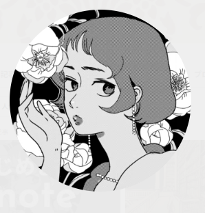

月間連載中2026.07-
僕の神様はΩじゃない
COMIC熱帯
男女の「性」に関わらず、子を産むことができる＜Ω＞。創造主の力を授かったΩ達は選ばれた神の子…その実態は保護という名の隔離と差別だった。Ωとしての人生を受け入れつつも従順になりきれないルカと、統べるもの＜α＞の典型のような生徒会長・エラト。「性」とは何か、「社会」とは何か。世界の成り立ちと常識を揺るがすオメガバース最前線。
作品ページへ →
COMIC熱帯
男女の「性」に関わらず、子を産むことができる＜Ω＞。創造主の力を授かったΩ達は選ばれた神の子…その実態は保護という名の隔離と差別だった。Ωとしての人生を受け入れつつも従順になりきれないルカと、統べるもの＜α＞の典型のような生徒会長・エラト。「性」とは何か、「社会」とは何か。世界の成り立ちと常識を揺るがすオメガバース最前線。
作品ページへ →
キリスト新聞社
さまざまなキリスト教の教派が集う聖エクレシア学院を舞台に、ピューリたんとその仲間たちが繰り広げる日常系ゆるふわ４コマ漫画。『キリスト新聞』に連載の全60話に番外編を加えて単行本化！ ふろく「ピューリたんカードゲーム」付き!
※SONO名義でのお仕事です

漫画・エッセイ・イラストなどのお仕事のご相談は、下記フォームからご連絡ください。
ご依頼内容やご希望の納期など、決まっている範囲でお知らせいただけると助かります。
メールでのご連絡：hello@example.com